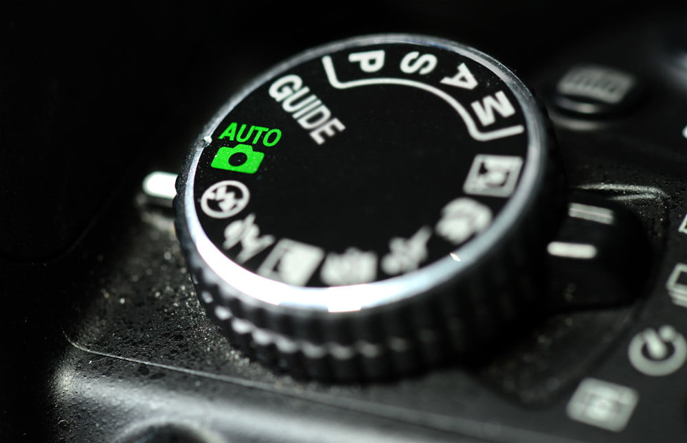
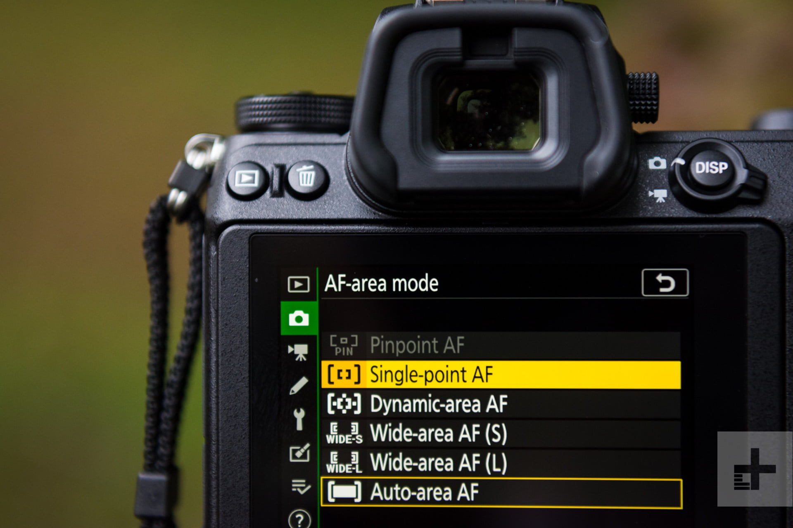
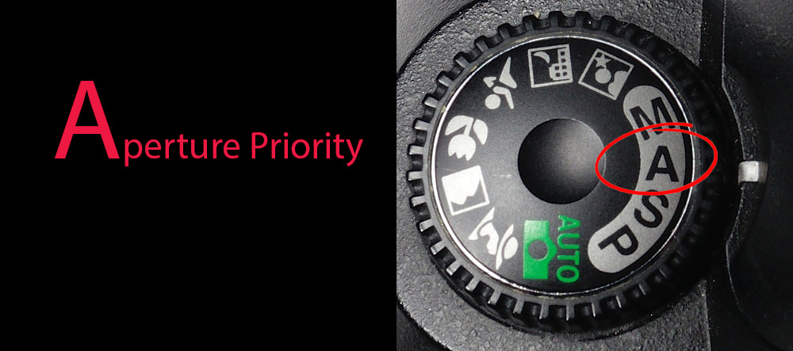
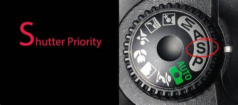
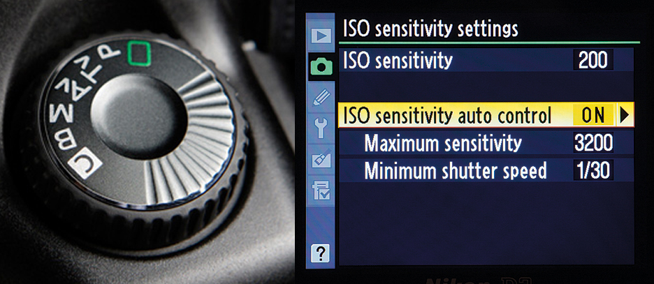
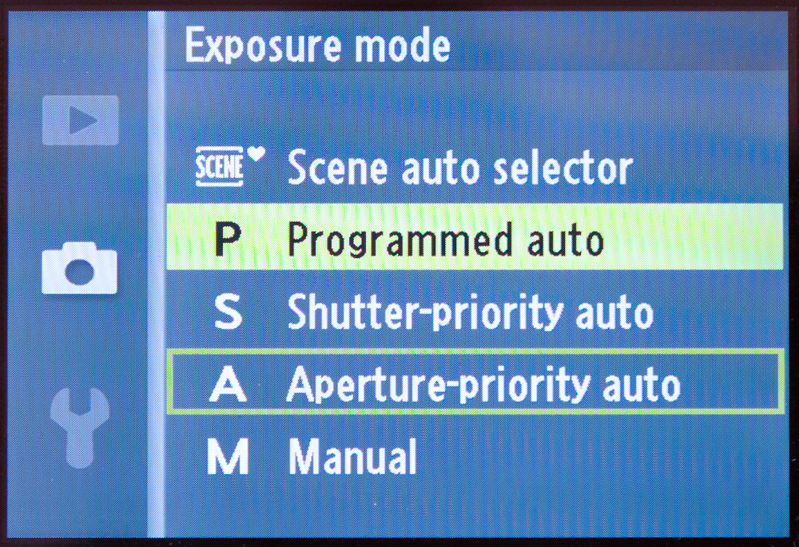
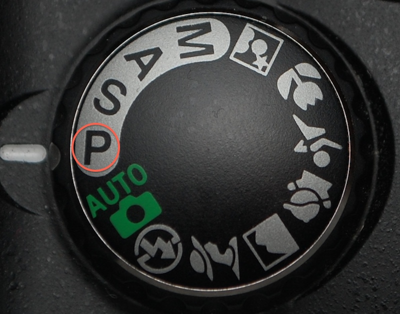
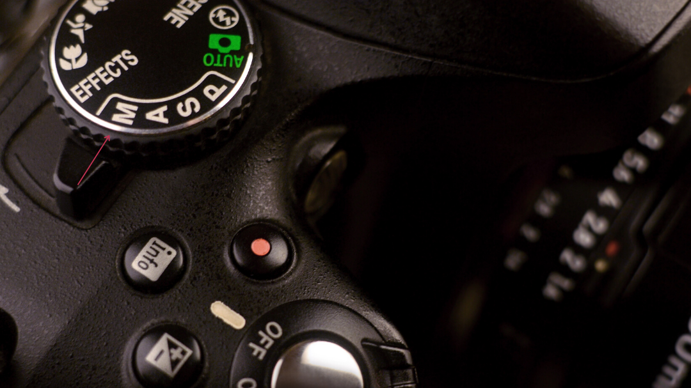
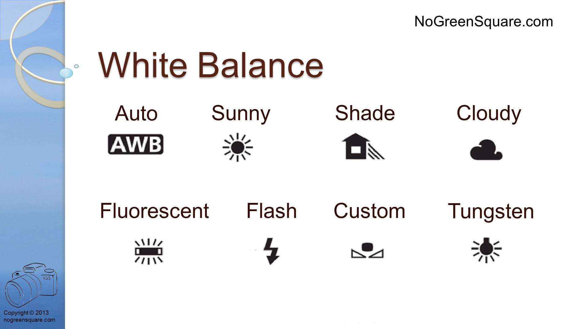

DSLR for Beginners: How to Use a DSLR Camera
Cameras come in a wide range of types with a variety of settings, from straightforward point-and-shoots to more manual options. The best camera for you will depend on which type of digital photography you want to do. However, one of the more popular and common tools used by photographers today is the DSLR.
What Is a DSLR?
A digital single-lens reflex camera (DSLR or digital SLR) is a type of camera that delivers high-end image quality and is widely used by amateurs and professionals alike. A DSLR camera allows you to see a live view of the image you’re shooting directly through the optical viewfinder (the LCD screen), allowing you to visualize and capture your scenes better.
How to Use a DSLR
The DSLR is a popular pick for both beginner and experienced photographers. It comes with plenty of shooting options and settings to choose from. If you’ve just acquired a new DSLR camera, there’s a beginner’s guide below to help you learn your camera settings so you too can shoot high-quality, professional-grade images:
1. Auto mode.
To use a DSLR, you need to decide which shooting mode you want. The camera body features a mode dial complete with a few different settings. Auto mode means the camera determines all of your settings, like the focus and white balance. This can be helpful for beginners, but the more experienced you get, the more likely you’ll want more control over your camera to capture certain shots.
2. Autofocus system.
This allows the DSLR camera to choose the focus point, using that to adjust its other settings and increase image stabilization. Where manual focus mode means the photographer is in charge of focusing (and refocusing) on their subject’s positioning, the autofocus mode can simplify this process. Auto-focus single (AF-S) is better for still shots like landscapes and buildings. Auto-focus continuous (AF-C) is better for moving subjects, as it allows you to pre-focus the shutter button by holding it down halfway, locking down focus.
3. Aperture priority mode.
Aperture priority mode (A or Av) is a semi-automatic shoot mode, leaving the amount of lens light up to you while the camera chooses the shutter speed. Aperture is measured in ‘f-stops,’ which increase the size of the lens as the f-numbers decrease. For example, an aperture f/4.0 is considered a larger or wider aperture lens, which results in a shallower depth of field. Aperture f/4.0 lets in twice the amount of light as an aperture of f/8.0, which is a smaller lens size that lets in less light, resulting in a deeper depth of field
4. Shutter priority mode.
Another semi-auto shooting mode, this camera setting usually appears as Tv or S on your mode dial. This works conversely to the aperture priority, where the camera will choose the aperture while you determine whether you want a slower or faster shutter speed. A fast shutter speed is better for crisply capturing quick-moving subjects, like sports or wildlife, whereas a slower shutter speed will depict more movement and sometimes slightly blurred objects (especially if they were moving fast).
5. ISO.
The ISO setting controls your digital camera sensor’s sensitivity to lighting conditions. Lower ISO numbers, like ISO 200, mean the sensor’s sensitivity to light is low, which is best for shooting in sunny environments. With plenty of light, your camera’s sensor doesn’t need to be too sensitive, as it will easily pick up the available brightness, and vice versa—a high ISO number means the sensor is more sensitive to light, making it a better choice for low-light conditions and environments where you want your sensor to pick up more light. These settings help with noise reduction, as the proper light sensitivity will minimize the amount of grain in your photos.
6. Exposure.
Exposure compensation allows you to control the amount of darkness or brightness that occurs in your images. Automatic modes can sometimes lead to overcompensation or undercompensation of exposure (you may have experienced this trying to focus light with your smartphone camera). Exposure is also determined by the exposure triangle, which is a reference to how the ISO, shutter, and aperture setting all work together to produce a particular exposure. Adjusting each element of this triangle will affect the other two, so it’s important to know how all these components work together to control the depth of field and the clarity of the image.
7. Program mode.
Program mode (P) is a step further towards full manual mode while also retaining some semi-automatic settings. Program mode allows you to adjust aperture and shutter, while the camera will automatically adjust the exposure.
8. Manual mode.
Manual mode (M) on a DSLR camera leaves all the settings up to you. You pick the shutter speed, the aperture setting, and the exposure, which means you’ll have to know how to balance these elements to digitally manipulate your environment and create a well-lit and well-captured image.
9. White balance.
White balance helps present colors truthfully on your video camera by determining the temperature of your white light. Light temperatures can vary between natural sources and bulbs, creating unwanted or unnatural color tones in your photographs. Familiarize yourself with the white balance feature to set the proper basis for the rest of your colors.
